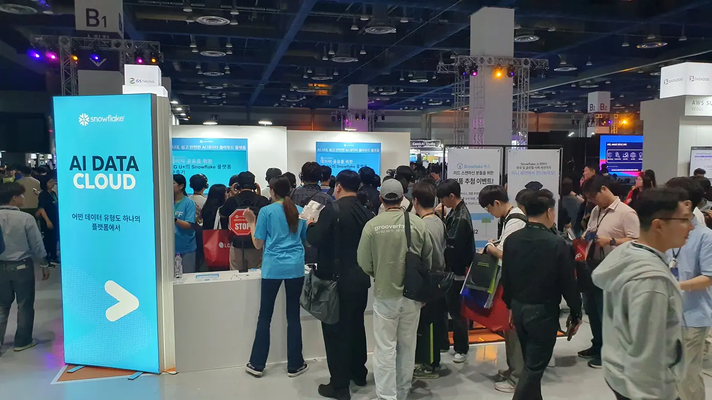
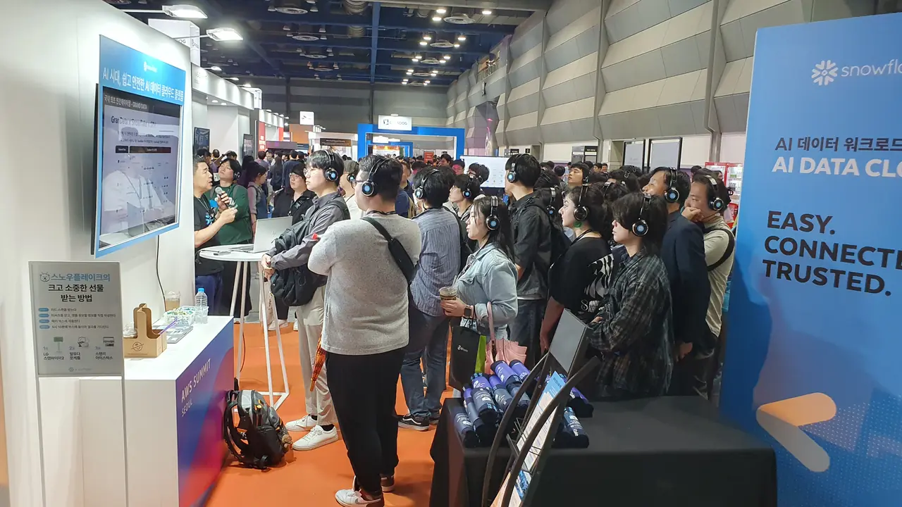

인력 구성 · 2026년 11월 17일
박람회 부스 운영 인력과 제품 설명 인력에게 줄 자료
박람회 부스 운영 인력은 제품을 아는 정도가 아니라 방문객 질문에 일관되게 답할 수 있는 자료를 가지고 있을 때 제 역할을 합니다. 외부 인력은 제품을 처음 접하는 경우가 많으므로, 행사 전에 줄 자료를 미리 만들어 두면 부스 품질이 달라집니다. 이 글은 부스 운영과 제품 설명 인력에게 줄 자료 다섯 가지를 정리했습니다.

- 부스 인력에게는 설명 대본이 아니라 질문 답변 자료가 필요하다
- 자료는 제품 요약, 질문 답변, 응대 순서, 시연 절차, 보고 체계 다섯 가지다
- 핵심 메시지는 한 문장으로 정리해 모두가 같게 말하게 한다
- 자료는 현장에서 바로 꺼내 볼 수 있게 한 장으로 만든다
부스 운영 인력과 제품 설명 인력의 차이
박람회 부스 운영 인력과 제품 설명 인력은 같은 사람이 맡기도 하지만 하는 일이 다릅니다. 부스 운영 인력은 방문객을 맞이하고 안내하고 부스 흐름을 관리합니다. 제품 설명 인력은 제품이나 서비스를 설명하고 질문에 답합니다. 시연이 필요한 부스에는 시연 인력이 따로 들어가기도 합니다.
역할이 섞이면 방문객이 어느 사람에게 물어야 하는지 모릅니다. 그래서 누가 맞이하고, 누가 설명하고, 누가 시연하는지를 부스 도면 위에 표시해 두는 것이 첫 단계입니다.

박람회 부스 운영 인력에게 줄 자료 다섯 가지
| 자료 | 넣을 내용 | 쓰는 순간 |
|---|---|---|
| 제품 요약 | 제품 한 줄 소개, 핵심 특징, 쓰임새, 대상 | 방문객이 처음 물을 때 |
| 질문 답변 | 자주 나오는 질문과 정해진 답, 모르는 질문 처리법 | 방문객이 깊이 물을 때 |
| 응대 순서 | 맞이, 질문 파악, 설명, 자료 전달, 연락처 수집 순서 | 방문객이 부스에 들어왔을 때 |
| 시연 절차 | 시연 순서, 체험 안내 문구, 주의 사항 | 시연이나 체험을 안내할 때 |
| 보고 체계 | 전문 질문이나 상담 요청이 생기면 누구에게 넘기는가 | 인력이 답하기 어려울 때 |
핵심 메시지는 한 문장으로
제품 설명 인력이 가장 많이 흔들리는 순간은 무엇부터 말해야 할지 모를 때입니다. 그래서 제품 설명은 한 문장 핵심 메시지에서 출발하도록 정해 줍니다. 그 한 문장을 모두가 같게 말할 수 있으면 부스 전체의 인상이 일관됩니다.
- 핵심 메시지는 제품 이름이 아니라 방문객이 얻는 것을 먼저 말합니다.
- 용어는 방문객이 이해할 수 있는 말로 바꿔 줍니다.
- 사실이 확인되지 않은 비교나 우위 표현은 쓰지 않도록 알려 줍니다.
- 설명 중간에 질문이 나오면 답을 먼저 하고 설명으로 돌아갑니다.

질문 답변 자료를 만드는 법
질문 답변 자료는 담당자가 방문객이 물을 법한 질문을 먼저 적고 답을 붙이는 방식으로 만듭니다. 처음에는 열 개 안팎의 질문이면 충분합니다. 행사가 시작되면 새 질문이 나오는 대로 한 줄씩 추가합니다.
- 방문객 입장에서 처음 궁금할 질문을 적습니다.
- 각 질문에 한두 문장짜리 답을 붙입니다.
- 답할 수 없는 질문에는 「확인해 드리겠습니다」와 보고 방법을 적습니다.
- 현장 책임자가 읽어 보고 잘못된 표현이 없는지 확인합니다.
인력이 모르는 질문에 추측으로 대답하지 않도록 하는 것이 가장 중요합니다. 틀린 답은 부스에 대한 신뢰를 한 번에 무너뜨립니다.
에이전시와 준비하는 방법
지노컴퍼니의 인력 유형에는 부스 운영 인력, 제품 설명 인력, 시연 인력이 있고, 전시와 박람회는 서비스 영역에 포함됩니다. 요청을 받으면 행사 규모와 성격, 필요한 인력 정보를 먼저 듣고 담당 매니저가 맞춤형 인력 운영 계획을 제안합니다. 자세한 인력 구성은 인력 서비스에서 볼 수 있습니다.
자료는 행사 전에 에이전시에 미리 보내 주세요. 행사 전 최종 점검 미팅에서 인력이 자료를 읽고 서로 질문해 보는 시간이 있으면 현장에서 훨씬 안정적입니다. 견적은 견적 문의에서 받습니다.
자주 묻는 질문
제품을 모르는 외부 인력도 제품 설명을 할 수 있나요?
자료와 연습이 충분하면 가능합니다. 다만 전문 지식이 필요한 질문은 모든 것을 답하게 하기보다 담당자에게 연결하는 방식으로 정해 두는 편이 안전합니다.
시연 인력과 제품 설명 인력은 따로 두어야 하나요?
부스 구조와 시연 방식에 따라 다릅니다. 시연이 길거나 체험이 많으면 역할을 나누는 편이 방문객 대기가 줄어듭니다.
자료는 언제까지 보내야 하나요?
정해진 기준은 없지만 행사 전 최종 점검 미팅 전까지 보내면 인력이 읽고 질문할 시간이 생깁니다. 가능한 빨리 주실수록 좋습니다.